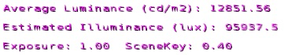
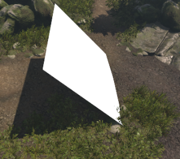
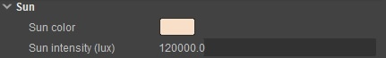
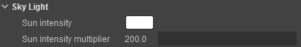
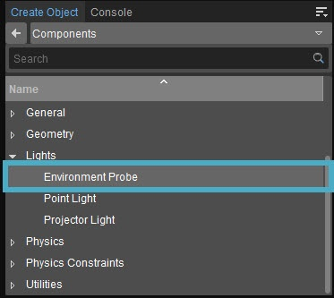
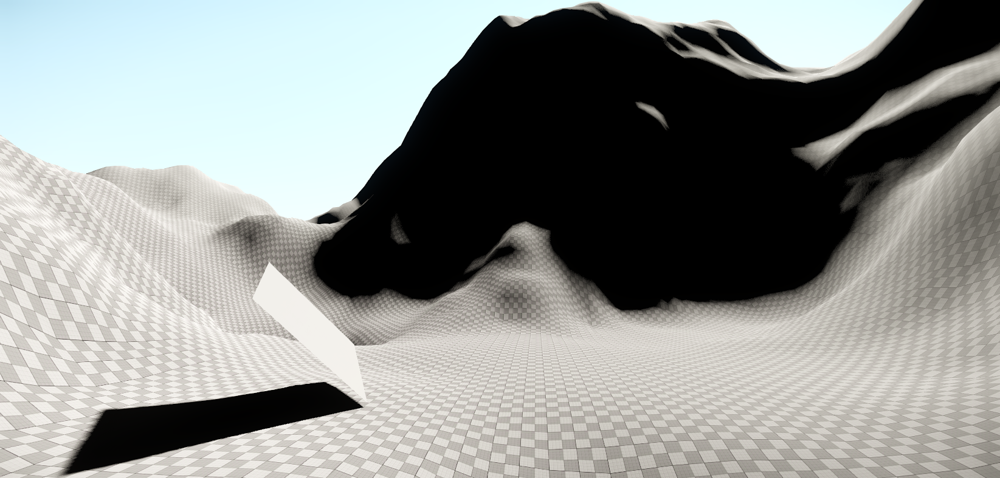
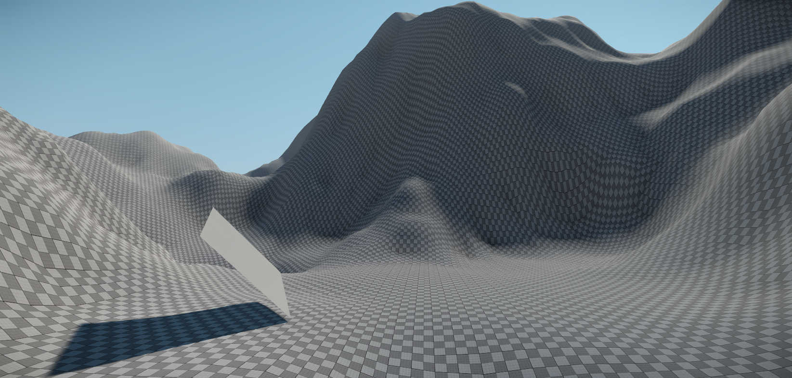
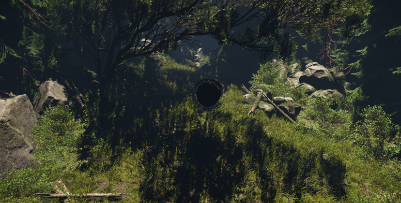
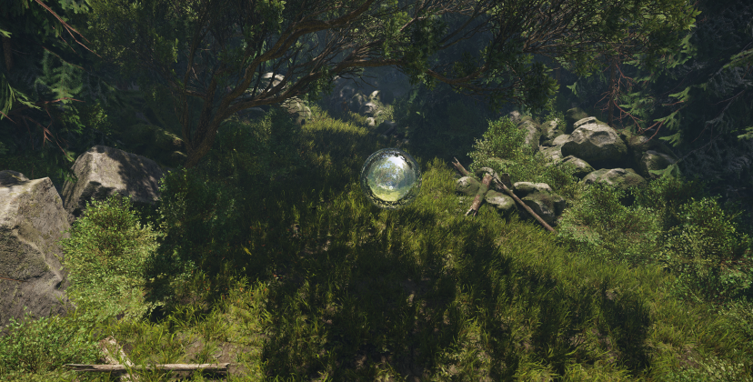
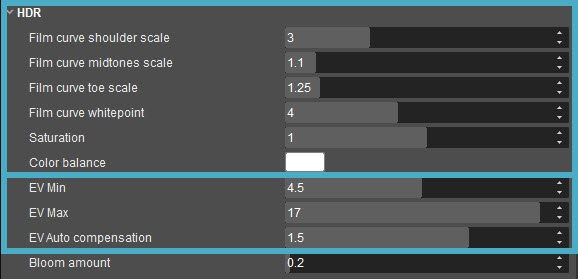

Overview
Physically Based Shading (PBS) brings different ways of approach to the lighting concept for levels within the CRYENGINE. This document will take you through the workflow that is recommended when lighting levels using PBS in CRYENGINE.
Step-by-Step Workflow for Lighting Levels
To complete this tutorial you will need to have already created a new level in CRYENGINE.
1. To begin, we must first set the correct luminance for our level.
Note that the following steps 1-9 are more educational and theoretical rather than practical. Using correct luminance values will ensure a lighting setup that more closely models real world values, and is a good starting point for a level, but are ultimately just a suggestion.
As the purpose of using accurate luminance values is to ensure the tone-mapping and eye adaptation works at its best, it’s more important to simply have good ratios between light and dark.
2. Open the Console and type the following command r_HDRDebug=1 this command disables the in engine tone mapper and displays the average luminance for the scene in debug text as seen in the image

r_HDRDebug
3. To get an accurate value of the luminance that is present in your level, you must place a pure flat white plane that is rotated to be perpendicular to the sun as seen in the image below. It doesn't have to be perfect, but note that the value will change significantly if the light from the sun hits the plane at a glancing angle.
You can find the plane object in: Create Object → Brush → default → primitive_plane_small.cgf
Assign a pure white material with no specular color to Properties → General→ Material.
To get the angle correct to the sun, watch the shadow of the plane. It will be biggest in width and length when it's perfectly perpendicular, thus, rotate the plane whilst observing the shadow with the goal of having the largest shadow possible.

Primitive plane
4. Next, zoom your camera in so that the light side of the white plane takes up the entirety of your viewport.
5. Note the Average Luminance displayed on the debug view.
6. Now we must decide the actual amount of luminance we want for the level. To do this, refer to the following table which lists some real-world Values.
Real World Setting | Amount | Unit | Ratio | Artistic Interpretation |
|---|---|---|---|---|
Full Moon | 0.25 | LUX | 0.00005 | -- |
Living Room | 50 | LUX | 0.01 | -- |
Sunrise with Clear Sky | 400 | LUX | 0.08 | -- |
Office | 500 | LUX | 0.1 | -- |
TV Studio | 1000 | LUX | 0.2 | -- |
Overcast Day | 15000 | LUX | 3.0 | Approximately 1.5 |
Indirect Sunlight (IN SHADOW) | 20000 | LUX | 4.0 | Approximately 2.0 |
Direct Sunlight (DIRECTLY LIT) | 100000 | LUX | 20.0 | Approximately 10.0 |
7. Once you've established the value you want to reproduce the desired luminance, open the Environment Editor.
8. In the Environment Editor there are four values that will directly affect this; these values can be found under the Variables section and should be used to achieve the desired luminance.
 
Environment Editor values for luminance
9. Now that we've set our luminance values to mimic the real world values, it's time to setup our ambient lighting. You can now re-enable the tone mapper by entering the following command into the console r_HDRDebug=0.
10. As all ambient lighting is now done through the use of image based lighting probes, also known as the Environment Probes, place one into your level. The entity can be found under Create Object → Components → Lights → Environment Probe.

Environment Probe location
At this point you should treat your initial environment probe as a global one. What this means is that it will provide the entire level with ambient lighting information, however, note that this is calculated from the probes location.
We will add smaller more localized probes later on which will override the global one when they are nested inside of the global boundaries.
11. Environment Probes act very similarly to lights wherein they have a radius; however, in the case of CRYENGINE, we can use either the default spherical projection or the box projection to ensure the accuracy of the probe's reflections.
Both types require you to set the overall size of the probe that the probe will cover.
Under the Active check-box, set the parameters BoxSizeX, BoxSizeY and BoxSizeZ of this first probe to encompass the entirety of your level.
12. Set the Diffuse Color, Diffuse Multiplier and Specular Multiplier as follows:
| Option | Value |
|---|---|
| Diffuse Color | 255,255,255 |
| Diffuse Multiplier | 1 |
| Specular Multiplier | 1 |
13. Next, we can generate our cubemap. Do this by clickingthe Generate button at the bottom of the properties panel.
When you generate a cubemap three textures will be created in the directory: Textures\cubemaps\MYLEVELNAME\...
The _cm.dds is the complied cubemap image, and the cm_diff.dds contains the lighting information. Both are created from the .tif file.
The name of the textures will be set to the same name as the environment probe entity.
- environmentprobe1_cm.tif
- environmentprobe1_cm.dds
- environmentprobe1_cm_diff.dds
14. The major difference you will notice will be in the shadows as with the addition of the diffuse lighting from the probe they will no longer be pure black.
Examples
In the following images you can see the difference between an active and an inactive environment probes. Note that the contents of the scene are baked into and then re-projected out from the environment probe and thus, the variety of indirect lighting and it's apparent effect will vary greatly.
 |  |
| No Probes active - Pure black shadow | Probes Active - Slightly blue and grey ambient from the sky and terrain |
|---|---|
 |  |
| No Probes Active - Pure black shadows and screen space reflections only | Probes Active - Dark green and brown with blue coming from above and accurate local reflections |
15. It is highly recommended to place a reflective and perfectly smooth sphere near each environment probe in the level. This is to visually ensure that the cubemap is still accurate. Should it look different than the environment around it, it would likely need to be regenerated. You can easily do this by placing a RigidBodyEx entity with the following parameters which can be modified via the Properties :
- Lua Properties → Model - objects/default/primitive_sphere_noproxy.cgf
- Properties → General → Material - materials/references/black_reflective
- Under the entity properties of the RigidBodyEx, tick Hidden In Game so it doesn't appear.
16. The last step is to generate the cubemap a second time. The reason for the second generation is that you will be able to bake in retro reflections from the original cubemap. Basically reflections of the original cubemap on objects will be baked in in this second cubemap generations.
17. Congratulations you have now setup a physically based lighting situations and can start adding assets, lighting, and more to your scene. Remember to re-bake your cubemaps as your level progresses.
Further Considerations
As the preceding tutorial is based on creating a new level there will be situations in which you have a much more populated level and there are some points that need to be addressed when working in more complete levels.
Local Cubemaps
The purpose of a local cubemap is to more accurately represent the lighting condition in smaller areas. Ensure that all areas within your level have some amount of cubemap coverage.
Some additional parameters need to be considered in these situations:
- Box Size X,Y,Z need to be set to encompass the area you need.
- Specular and Diffuse values should be set to maintain consistency and as such, a value of 1 at pure white for both is recommended.
- Specular and Diffuse values lower than 1. The CRYENGINE shading model relies heavily on consistency and accuracy, and as such it is highly recommended not to use values lower than 1 for local cubemaps. If you find that the lighting looks incorrect, please consider the following:
- Specular is too high/low:
- Check the cubemap for errors.
- Re-generate the cubemap using the procedure explained in the previous tutorial.
- Diffuse is too high/low:
- Check the cubemap texture for errors.
- Re-check luminance values for the level.
- Add a separate light entity to provide additional ambient light and re-generate cubemap.
- Specular is too high/low:
- Sort Priority Any Overlapping cubemaps need to have a sorting priority assigned to them. The recommended way to do this is to base Sort Priority on visual requirements; in other words, give more obvious and noticeable cubemaps (say with a specific object reflected in it) a higher priority in those areas.
- Fall Off When using local cubemaps, it's recommended to always adjust the falloff value so that all areas are 100% affected by the cubemap. A balance will have to be struck between a smooth falloff (and thus transition) for each probe against its coverage.
- AttenuationFalloffMax is used to control how the influence of the cubemap falls off.
- A value of 0 means that the box shape will have hard edges and there is no falloff (cheaper performance).
- A value of 1 means the falloff will begin at the center of the box and blend out to the box extents (most expensive on performance).
- A value of 0.8 means the falloff begins at 80% of the extents of the box shape.
Resolution
In most cases it's not required to have much more than a 256px resolution for your cubemaps. Currently the Environment Probe system supports the generation of 256px cubemaps only, and the renderer has been tuned for this values to achieve the best results without spending unneccessary resources on higher resolution textures with little benefit.
Why is Luminance so Important?
The Purpose of luminance is to create a balance of ratios between bright and dark objects in the area and get the right amount of auto-exposure.
The luminance ratios are very important to get natural looking results out of our shader and tone-mapping models, and you should adhere to them as close as possible, whilst of course taking composition into consideration. It should also be noted that real world values are sometimes not possible in the engine so a balance is really what’s important here.
How does Tone Mapping Work?
The HDR group within the Environment Editor is divided between two sets of parameters that control the Tone Mapping and the Exposure Value, as shown respectively in the image below.

Tone Mapping and Exposure Value parameters
Tone mapping is responsible for balancing the highlights, midtones and shadows of the image to give the impression of a high dynamic range. It is possible to control each of these components individually within your scene by changing the Film curve shoulder scale (highlights), Film curve midtones scale (midtones) and Film curve toe scale ( shadows ) respectively. These three settings can have a very dramatic impact on your scene and should only be used as a final tweak on a finished level.
The Film curve whitepoint parameter defines which HDR luminance value is mapped to LDR white after tone mapping. Set this to 4 for most lighting scenarios.
The Saturation and Color Balance parameters allow you to quickly change the intensity of the colors in your scene as well as to apply a colored filter on top of the image. These two should be used for previewing purposes only; for final image color/saturation tweaking you should follow the Color Grading workflow. For more information about color grading, please refer to the Tutorial - Color Grading page.
It is important to understand that Exposure Value is a concept borrowed from photography. Lower EV usually gives a brighter result by making the camera more sensitive to light. In CRYENGINE, the EV is automatically measured and is being used to balance the brightness and contrast of a given scene. In order to visualize the Exposure Value we also use the r_HDRDebug 1 which exposes the measured EV, the amount of auto compensation (if any) and the final EV.
There are a number of parameters that can be used to offset the EV to stylistically over/underexpose the final image.
When working on a new level it is important to nail down the minimum an maximum EV as they directly impact the overall look of the level by affecting the dynamic range of your scene. The parameters that control this are the EV Min/EV Max, which effectively cap the minimum and maximum Exposure Value the scene can reach at any given time.
As mentioned earlier we also have the option to offset the measured EV by using the EV Auto compensation parameter, however this will not push it beyond the range defined by the EV Min/EV Max values.
Lastly this section also contains the parameter that controls the amount of bloom in your scene (Bloom amount). Bloom is used to reproduce an imaging artifact of real-world cameras. The effect produces fringes (or feathers) of light extending from the borders of bright areas in an image, contributing to the illusion of an extremely bright light overwhelming the camera or eye capturing the scene.